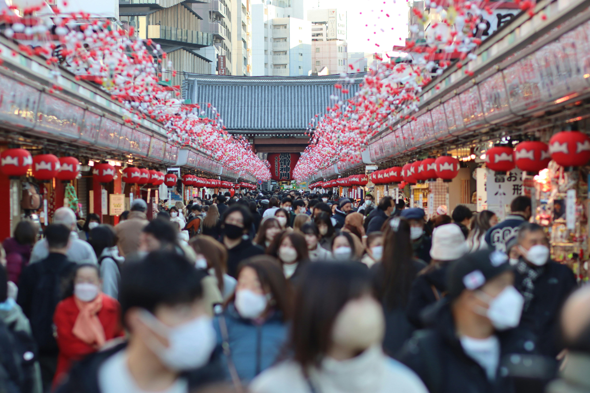
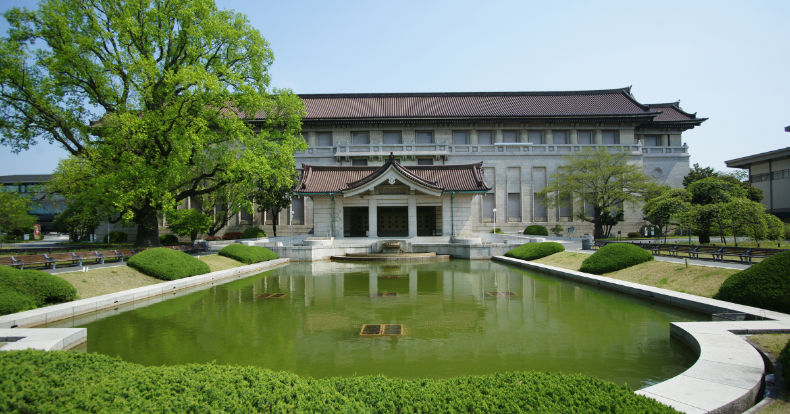

Top 3 Places to Visit in Tokyo
Tokyo is a city of contrasts, and three neighborhoods capture its spirit best:
- Shibuya, where neon lights and youth culture pulse through busy streets
- Oshiage & Asakusa, where ancient temples and the towering Tokyo Skytree stand side by side
- Ueno, a cultural treasure trove filled with museums, cherry blossoms, and a vibrant local market
These districts offer a perfect blend of the modern, the traditional, and the artistic—ideal for first-time visitors wanting to experience the heart of Tokyo.
Shibuya

Shibuya is one of Tokyo’s most popular districts, especially among young people, known for its cutting-edge fashion, pop culture, and buzzing nightlife.
Popular Activity 1: Scramble Crossing & Center Street Stroll
Experience one of Tokyo’s most iconic moments by walking across the Shibuya Scramble Crossing, where up to 2,500 people surge through the intersection every two minutes.
After crossing, head into Shibuya Center Street (Center Gai), a narrow pedestrian alley packed with trendy fashion boutiques, karaoke spots, game arcades, and local eateries. It's the heart of Shibuya's youth culture and a must for soaking in Tokyo’s vibrant urban energy.
Popular Activity 2: Shop at Shibuya PARCO
Dive into Japanese pop culture at Shibuya PARCO, a cutting-edge shopping and entertainment complex perfect for anime, gaming, and fashion lovers. Inside, you’ll find the Pokémon Center, Nintendo Tokyo, and Jump Shop.
Beyond that, PARCO offers art exhibits, streetwear brands, cafes, and a cool rooftop with city views—making it an all-in-one destination for fun and discovery.
Popular Activity 3: Explore Harajuku & Meiji Jingu
Harajuku is Tokyo’s hotspot for bold fashion and youthful trends. Start at Takeshita Street, a bustling lane packed with colorful shops, crepes, and pop culture. Wander through nearby side streets for unique boutiques and trendy cafés.
Just minutes away, escape the buzz in the tranquil forest paths of Meiji Jingu, one of Tokyo’s most important Shinto shrines—a peaceful, spiritual contrast to the energy of Harajuku.
| Activities | Admission Fee (per adult) |
Duration | Access Details |
|---|---|---|---|
| Scramble Crossing & Center Street Stroll | Free | 1.5-2 hours | 2 minutes walk from Shibuya Station to Shibuya Scramble Crossing |
| Shop at Shibuya PARCO | Free | 1.5-2 hours | 5-7 minutes walk from Shibuya Station |
| Explore Harajuku & Meiji Jingu | Free | 2.5-3 hours | 2 minutes walk from Harajuku Station to Takeshita Street |
Oshiage & Asakusa
Oshiage/Asakusa blends Tokyo’s old-world charm with futuristic landmarks, where ancient temples meet the soaring Tokyo Skytree.
Popular Activity 1: Visit Senso-ji Temple & Nakamise Street
Step into Tokyo’s history at Senso-ji the city’s oldest and most beloved temple. Enter through the grand Kaminarimon Gate, then walk down Nakamise Street, lined with colorful stalls selling traditional snacks, souvenirs, and crafts.
The temple grounds blend spirituality with vibrant street life, making this a perfect spot to experience both old and modern Tokyo in one visit.
Popular Activity 2: Explore Tokyo Skytree & Tokyo Solamachi
Head to Tokyo Skytree the tallest structure in Japan, for incredible panoramic views from its observation decks. At its base, you’ll find Tokyo Solamachi, a stylish shopping and dining complex with over 300 stores and restaurants.
From high fashion and character goods (such as Ghibli, Sanrio, Kirby, etc) to sweets and skyline views, this area offers a full Tokyo experience for first-time visitors.
| Activities | Admission Fee (per adult) |
Duration | Access Details |
|---|---|---|---|
| Visit Senso-ji Temple & Nakamise Street | Free | 1.5 hours | 3 minutes walk from Asakusa Station |
| Explore Tokyo Skytree & Tokyo Solamachi | ¥2100-¥3100 (Skytree) | 2-3 hours | Direct access to Tokyo Skytree and Solamachi from Oshiage Station |
Ueno
Ueno is a cultural hub known for its expansive park, top-tier museums, and a lively market street that captures traditional Tokyo spirit.
Popular Activity 1: Visit Ueno Museums
Ueno is home to several major museums, all located within or near Ueno Park. The Tokyo National Museum (TNM) showcases samurai armor and ancient art, while the National Museum of Nature and Science (NMNS)offers hands-on exhibits and dinosaur skeletons.
Whether you’re into art, history, or science, there’s something here for everyone to enjoy.
Popular Activity 2: Explore Ueno Park & Ueno Zoo
Enjoy a break from the city’s pace at Ueno Park, a vast green space known for cherry blossoms and weekend strolls. Within the park lies Ueno Zoo, Japan’s oldest zoo, home to beloved pandas, elephants, and a wide range of animals.
It’s a fun and peaceful outing, especially for families or nature lovers exploring Tokyo for the first time.
Popular Activity 3: Shop and Snack at Ameyoko Market
Right beside Ueno Station, Ameyoko Market is a bustling open-air shopping street filled with street food stalls, quirky shops, and bargain deals. Once a black market after WWII, it’s now a lively local favorite.
Grab some fresh takoyaki, browse discount cosmetics, or just soak up the energetic street vibe.
| Activities | Admission Fee (per adult) |
Duration | Access Details |
|---|---|---|---|
| Visit Ueno Museums | ¥1000 (TNM) ¥630 (NMNS) |
3-5 hours | 10 minutes walk from Ueno Station Park |
| Explore Ueno Park & Ueno Zoo | ¥600 (Ueno Zoo) |
2–3 hours | 2 minutes walk from Ueno Station to Ueno Park |
| Shop and Snack at Ameyoko Market | Free | 1.5 hours | Short walk from Ueno Station or Okachimachi Station |